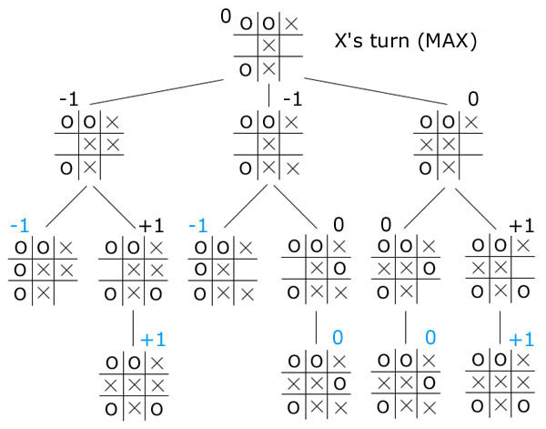
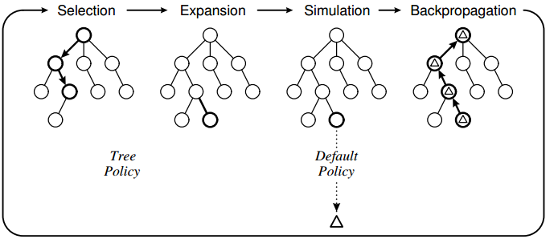

AlphaGo: Solving Go with Machine Learning
By Hugo Mougard
On March, 3
DeepMind published a paper in Nature on the 27th of January to introduce AlphaGo.
AlphaGo is the first AI to ever beat a human Go pro without free moves.
Overview
- The Game of Go
- Previous Go AIs
- Convolutional Neural Networks
- AlphaGo
- Conclusion
The Game of Go
A Simple Ruleset
There are 2 important rules:
- stones surrounded by enemy stones are captured
- empty intersections surrounded by your stones are your territory
The Game of Go
Capture

The Game of Go
Territory

The Game of Go
A Complex Game
Despite its very simple rules, Go is very hard to master:
- Average number of possible moves at each turn: 200
- Average number of moves in a game: 300
- Number of legal positions: estimated number of atoms in the observable universe squared
Overview
- The Game of Go
- Previous Go AIs
- Convolutional Neural Networks
- AlphaGo
- Conclusion
Previous Go AIs
Prerequisite: Game Tree

Previous Go AIs
Objective of a game AI
Explore the game tree efficiently to find the best move.
Previous Go AIs
Min-Max
Previous Go AIs
Min-Max applicable to Go?
- Average number of possible moves at each turn: 200
- Average number of moves in a game: 300
→ 200300 moves to explore
Previous Go AIs
Monte Carlo Tree Search
Min-Max approximation.
Overview
- The Game of Go
- Previous Go AIs
- Convolutional Neural Networks
- AlphaGo
- Conclusion
Convolutional Neural Networks
Introduction
Approximators of very complex functions, usually “intuitive” ones.
Convolutional Neural Networks
Application
Mainly image and text understanding.

Convolutional Neural Networks
Architecture
Multiple layers of filters combined together.

Convolutional Neural Networks
Filters

Convolutional Neural Networks
Learned Filters

Convolutional Neural Networks
Application

Convolutional Neural Networks
Relation to go
Instead of working on pixels, work on intersections.

Overview
- The Game of Go
- Previous Go AIs
- Convolutional Neural Networks
- AlphaGo
- Conclusion
AlphaGo
Intro by DeepMind
AlphaGo
Core of the approach
Augment Monte Carlo Tree Search with two Convolutional Neural Networks.

AlphaGo
Policy Network
Predict the next move given the position.

AlphaGo
Value Network
Predict the winner given the position.
AlphaGo
Integration in MCTS

AlphaGo
Supervised Learning
- 29M positions from 160k KGS games
- 8M positions from Tygem games
AlphaGo
Reinforcement Learning
- Make the policy network play against its previous versions to create new data to learn from
- Use the new policy network to create 30M positions to learn the value network
AlphaGo
Hardware
Google scale:
- 1202 CPUs
- 176 GPUs
- 40 search threads
AlphaGo
Performance
Beat Fan Hui, the European Go Champion 5-0.

AlphaGo
Final Boss
Google challenged Lee Sedol, the best player of the last 10 years. Starting in 6 days!
1,000,000$ prize!
Overview
- The Game of Go
- Previous Go AIs
- Convolutional Neural Networks
- AlphaGo
- Conclusion
Conclusion
- Yet another milestone reached for AI
- Very general techniques, applicable to many tasks